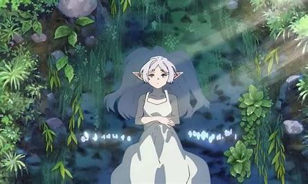
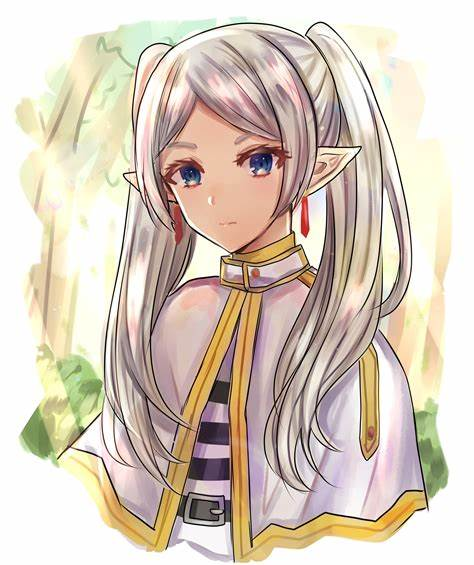

My manga recomendation
In this website i will recomend some of my favourite manga that are from various genres. hope you will find it useful.
Here is the top 5 the best manga in 2023 , that you can check out.
1, Frieren
After spending a decade journeying together and defeating the Demon King, the Hero Party, consisting of Frieren the Mage, Himmel the Hero, Heiter the priest.
and heiter the warrior, all of them reminisence their journey as they watch the meteor shower, a phenomenon that occurs only once ever fifty years.
with Frieren promising to show them the sight again at a better viewing location. Afterwards, they go their separate ways, and frieren live on to learn
magic and collect all kinds of spellsin order to make most of her time, althrough this change when one of her party mate died and left her with a girl.
2, Goblin Slayer

In a world of fantasy, adventurers come far and wide to join the Guild, in order to complete contracts for whatever jobs are available. And then comes an
inexperienced priestess joins her first adventuring party but comes into danger after her first adventurer contract involving goblins went wrong. She is
then saved by a man known as Goblin Slayer, an adventurer whose only purpose is the eradication of goblins with extreme prejudice. The entire plot of
the story is intense and full of surprises from beginning to end and will sure keep you on your toes reading it.
3, Fruit Basket

Fruits Basket tells the story of Tohru Honda, an orphan girl who, after meeting Yuki, Kyo, and Shigure Sohma, learns that 13 members of the Sohma family
are possessed by the animals of the Chinese zodiac and are cursed to turn into their animal forms when they are weak, stressed, or when theyre stress
or embraced by anyone of the opposite gender who is not possessed by a spirit of the zodiac. The story is really interesting and heart wrenching forms
from moments that tugs your hearstrings to moments that makes you blush or even make you filled with rage, the manga is simply a masterpiece And
a emotional rollercoaster.
4, Demon Slayer

The story takes place in the Taishō era Japan, where a secret organization, known as the Demon Slayer Corps,has waged a longtime war against demons for centuries.
hese demons are former humans who possess supernatural abilities such as super strength, rapid regeneration, and unique powers referred to as "Blood Demon Art".
The main story follows Tanjiro Kamado is a kind-hearted and intelligent boy who lives with his family in the mountains. After his father's death, he became his family's
breadwinner and travel to nearby villages to sell charcoal. But one day when he is selling charcoal his whole family is attacked by a wondering demon causeing all of
them to be slaughtered and leaving his only younger sister named nezuko alive but to his surprise she has been transformed to a demon. The storry may seem generic
but it is filled with action packed and heart wrenching moments, it also teaches us how kindness is potrayed trhough tanjiro interaction will demons along his journey.
5, Hikaru died

Yoshiki and Hikaru are two teenage boys living in a small town in rural Japan. Despite having opposite personalities and different hobbies, he two maintain a close friendship
with each other with the potentional of harboring a romantic feeling However, on one winter day, Hikaru is fatally injured while hiking in the mountains alone. Before dying,
a mysterious eldritch being comes across him and consumes him, becoming him physically in the process.. Yoshiki still wants to stay with "Hikaru", however "Hikaru"'s alien
nature, along with other eldritch beings and hunters of said beings may make that impossible. It was an interesting plot and definetly new as it incoporates new elements
of story telling using panel of art that potrays the message and emotions the story wants to deliver.
That is all for the best manga of 2023 I hope you will check it out and if you want to know more please click the picture below.
